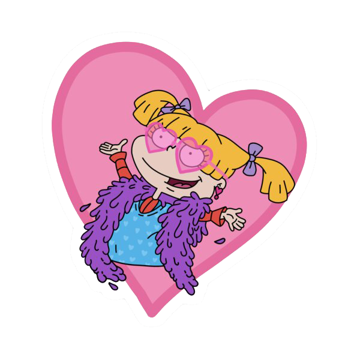
Acerca de mi
Soy protagonista de la serie animada de Nickelodeon, Rugrats: Aventuras en Pañales.
Todos los días vivo distintas aventuras divertidas con mis amigos.
A diferencia de ellos soy la más bonita y consentida.
¡No dejen de leer que voy a contarles más sobre mi!
Datos Personales
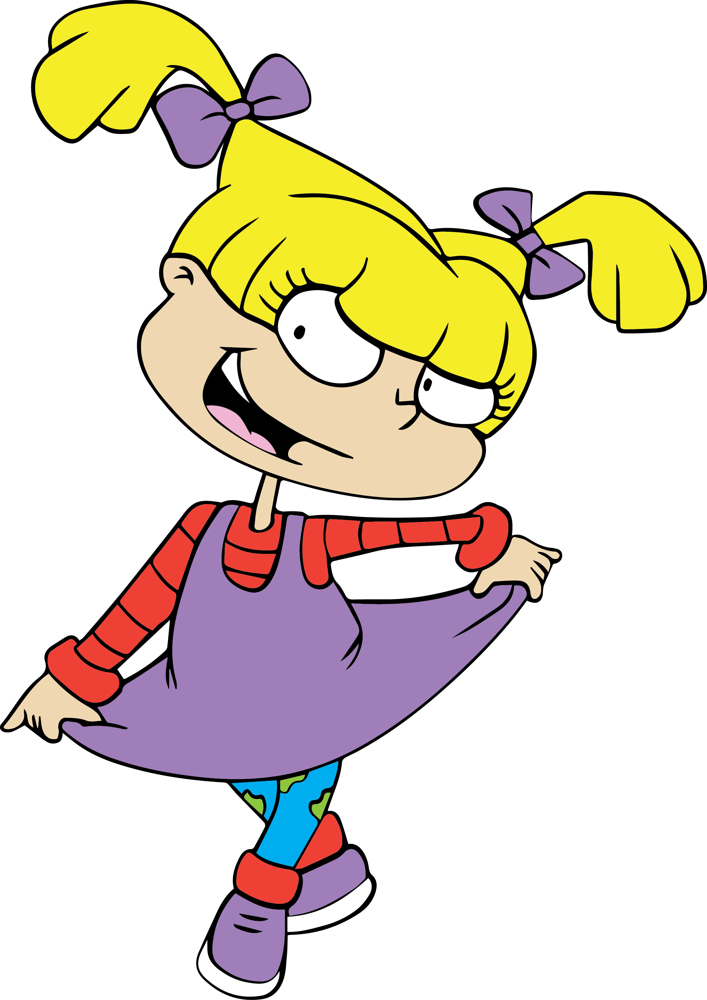
Mi Look
Accesorios: 2 moños violetas para atar mis colitas
Infaltable: ¡Mi vestido violeta y mi remera roja!
Favorito: ¡Mis calzas verdes y naranjas!
Combinable: Mis zapatillas violetas que combinan con mis moños y mi vestido :)
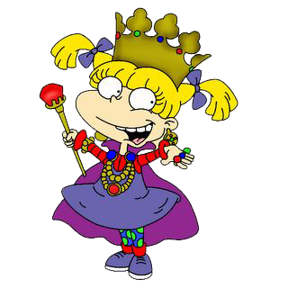
Cynthia
Voy a contarles un poco sobre Cynthia. Ella es mi muñeca favorita en todo el universo y me gustaría que la conozcan. Cynthia es tan bonita como yo, le encanta estar conmigo y yo con ella. Me gusta jugar con Cynthia, peinarla, maquillarla y cambiarla.
Estoy segura de que a ella también le gusta que juegue con ella.
Su pelo rubio se parece al mio, solo que ella está más despeinada. También intente vestirla con un vestido y zapatos así somos iguales. Cynthia es mi primer muñeca y significa mucho para mi.
¡En su cara se nota que le encanta que yo sea su dueña!
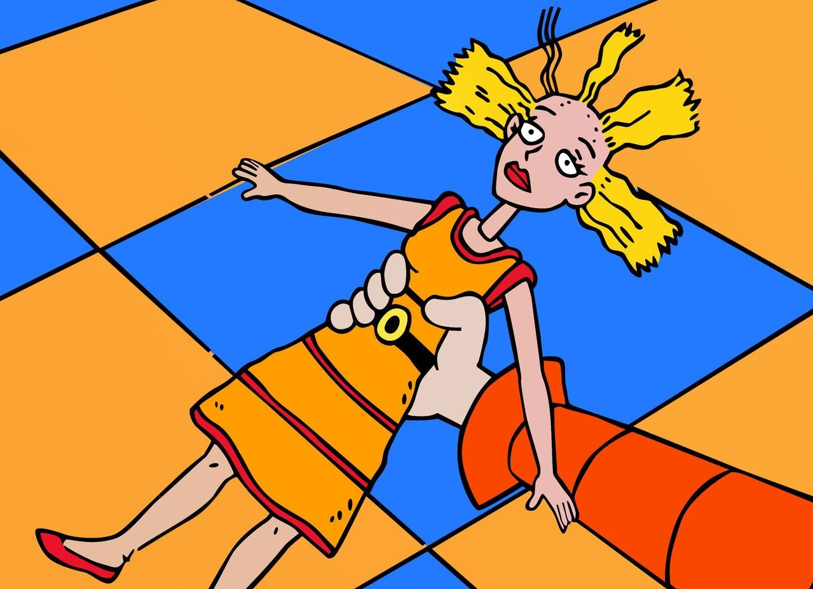
Fluffy
Ahora viene mi parte favorita...Fluffy! Para quienes no saben, voy a presentarle a mi mascota Fluffy. Es una gatita persa chiquita y blanca. Sus ojos son amarillos y llaman mucho la atención. Me encanta hacerle las mismas colitas que me hago yo y también lleva siempre su collar. Es tan coqueta como yo!
Aunque no parezca, Fluffy es muy cariñosa y siempre compartimos el mismo humor.
Como yo, es muy caprichosa y siempre quiere conseguir lo que quiere a todo costo. ¡A veces parecemos hermanas gemelas!
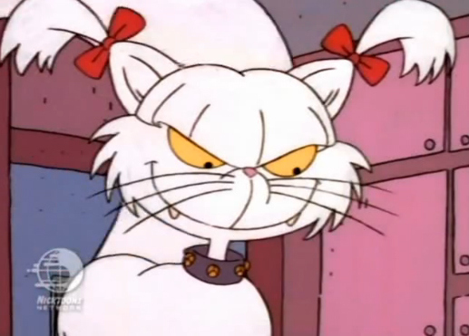
Mis Amigos
Ellos son quienes me acompañan todos los días en mis pequeñas aventuras.
Sus nombres son: Carlitos, Susy, los gemelos Phil y Lil, Kimi y Tommy!
A diferencia de ellos soy la más caprichosa y consigo todo lo que quiero, pero igualmente nos llevamos bien y hacen de mis días los más divertidos.
¡Les comparto algunas fotos de ellos!
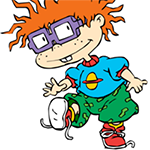
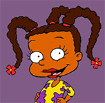
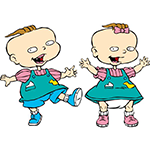
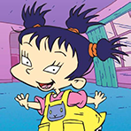
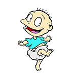
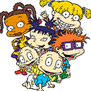